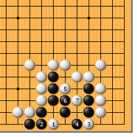
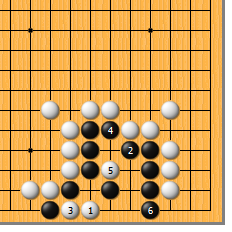
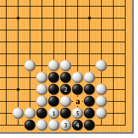
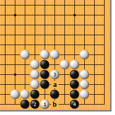
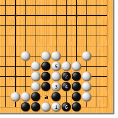
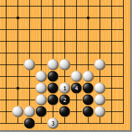
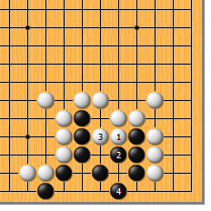

|  |  | |
| 图1 白1点，当然的急所。黒2粘，白3扳，正是形状的要点！黒4如挡，白5尖，黒6团则白7挖，黒无论如何做不出第二个眼。
| 图2 白1点时，黒2置之不理而扩大眼位，白又当如何？白3断入，只好如此，黒4再度扩大眼位。白5点，黒6再立，好象有双活的味道？
| |
|
 |
 | |
图3 白的答案是白1的提。黒2必粘，白3打吃时，黒如4位反打抵抗，白5位提即可，黒苦于气紧，无法a位打吃。不过话说回来，就算黒能于a位打吃，白粘后，黒还是个花六。 | 图4 白1、黒2交换后，白如马上走3位的尖，则操之过急。黒4立，活净。白如a位挤，黒b位立即可。不过，白也另有强手考验黒，需得小心……
| |
|
 |
 | |
图5 白1爬，很难应付。黒2挤，白3利用黒气紧的毛病，可以长驱直入。黒4打吃，白5粘住，此时黒6打，巧妙！白虽可a位提黒三子，然而黒打三还三，可用苦肉计求活。 | 图6 白1先尖，次序错误。黒2团住，白3再点时，黒4打吃可活。白3如于4位团，黒3位做眼，也是活棋。
| |
|  | 您的高见 | |
图7 白1冲，送黒眼形，是典型的俗手。黒2高高兴兴地挡住，白3再曲时，黒4做眼，已然成活。白3如于4位点，黒3位做眼，也是活棋。 |